汽车嵌入式开发，离不开仿真设备，即使没有使用过CANoe，你或许也听过CANoe。就是这个小独木舟，让咱们汽车从业者是又爱又恨，爱是因为它的好用和稳定，恨是因为咱们没有如此强悍的国产设备，虽然目前国内有企业在做，还是有一定差距。进入主题，不管开发还是测试，DUT（Device Under Test）的测试必不可少。而唤醒被测节点是进入测试的必要环节，对于不同的DUT，支持的总线类型可能不同，那么，常见的CAN、Flexray、Lin总线，如何在CANoe中配置呢？提示：本文使用的硬件接口卡类型：VN7640，CANoe版本15.0
根据DUT支持的总线类型，选择需要的Channel和Channel数量。本文：配置两路CAN、一路Flexary、一路Lin。具体步骤：CANoe主界面->Hardware->Channel Usage。如下所示：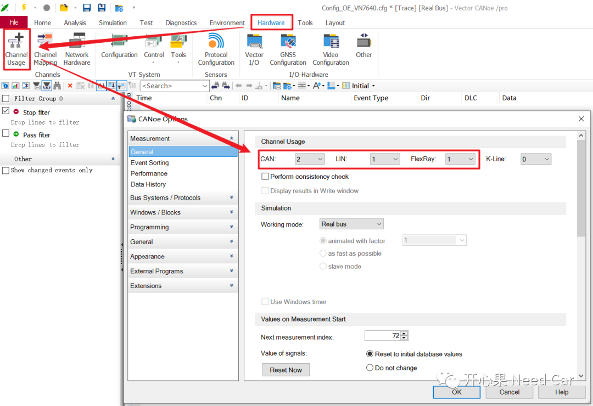
选择好使用的总线Channel和Channel数量以后，需要配置对应总线的网络参数。
CAN总线的网络参数设置主要包括：波特率、采样点等，设置界面如下所示：
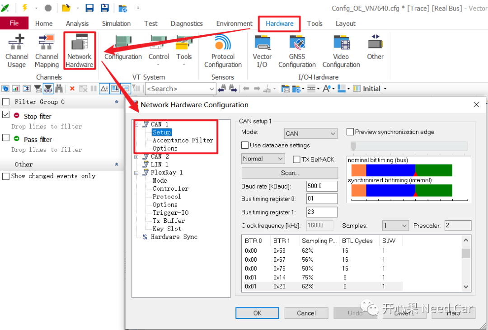
Flexray总线的配置如下所示，一般需要设置"Options"中的Wakeup Pattern设置，如下所示：
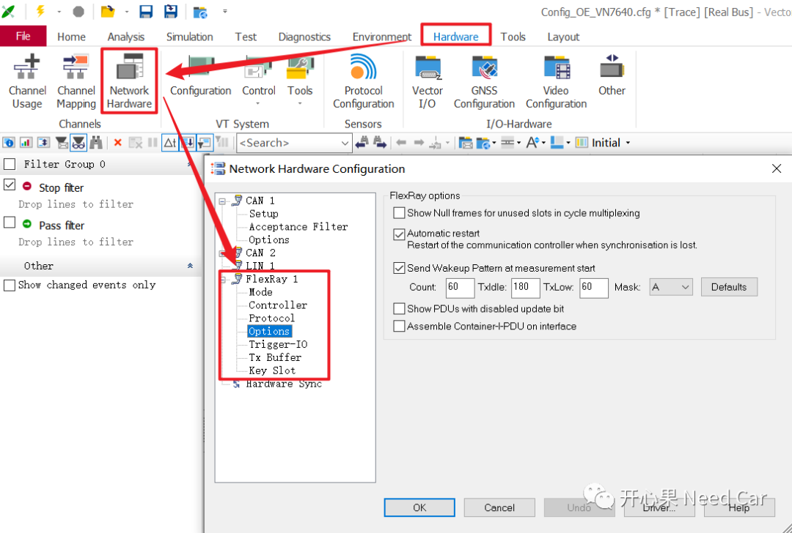
Lin总线，配置的参数相对较少，包括：Protocol和Baud rate等，配置界面如下所示：
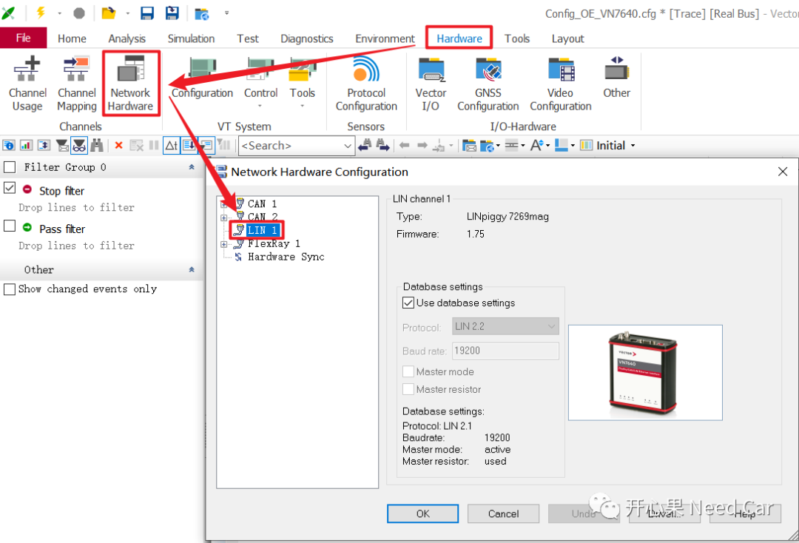
完成网络配置以后，将网络和硬件接口卡对应的Channel进行映射，本文CAN、Lin、Flexray的映射如下所示：
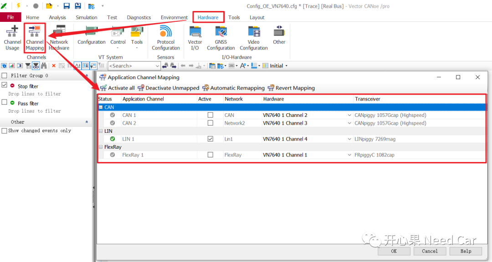
提示：要确认使用的硬件接口卡，每个Channel支持的总线类型，不要映射错。（一）配置CAN Simulation Setup一般CAN Simulation Setup会配置：IG（Interactive Generators）、Databases、Channels等，如下所示：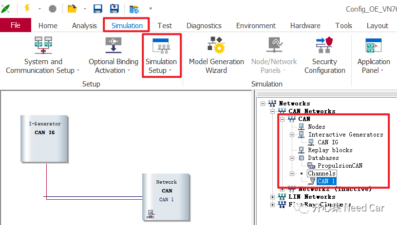
添加通信矩阵，CAN通信矩阵可以是*.dbc文件，也可以是*.arxml文件。
3、IG（Interactive Generators）设置自定义报文，eg：网络管理报文，以便于唤醒DUT。双击IG界面，在弹出的界面，右击空白位置，添加一个CAN Frame，如下所示：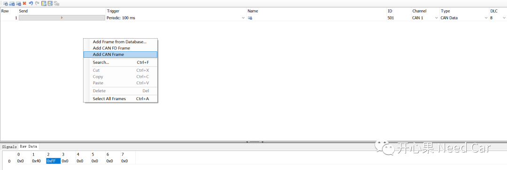
如上，本文配置了一个CAN ID = 0x501（网络管理报文），DLC = 8的经典CAN帧，以便于唤醒DUT。
4、Replay Blocks
用于回放数据流，分析问题使用。
（二）启动仿真
设置网络管理报文周期发送（0x501），之后，启动CANoe的仿真，如下所示：
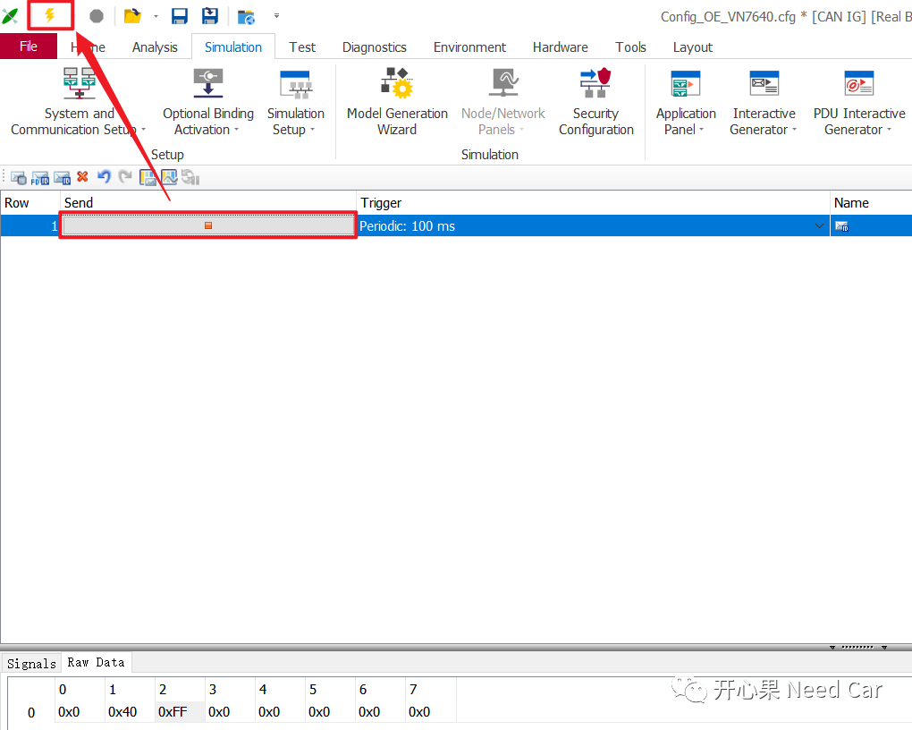
在Analysis->Trace->观测CAN通信行为，如下所示：
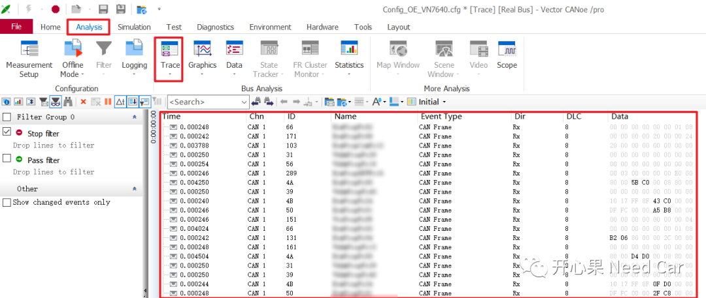
（一）配置Flexray Simulation Setup
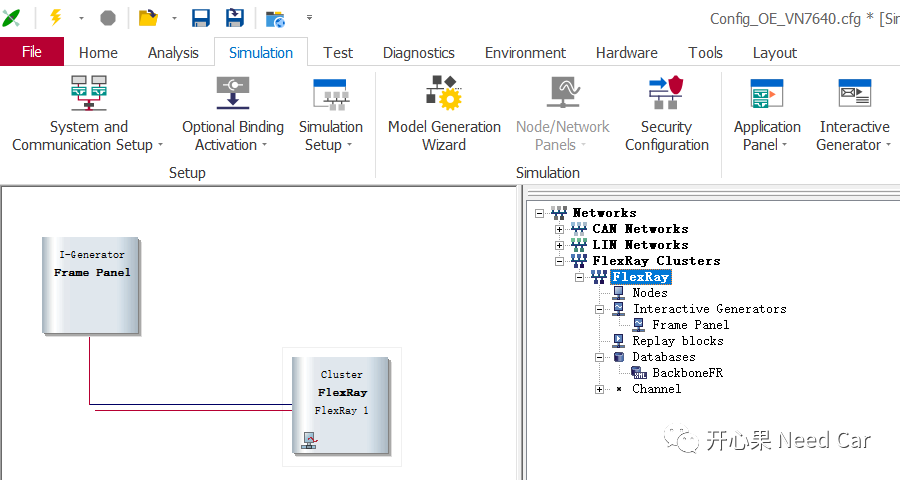
添加硬件接口卡对应的Flexray Channel
3、IG（Interactive Generators）同CAN总线一样，Flexray也需要NM Msg唤醒，选择"Add Frame..."，从通信矩阵中，添加一个非DUT节点的NM Msg，如下所示：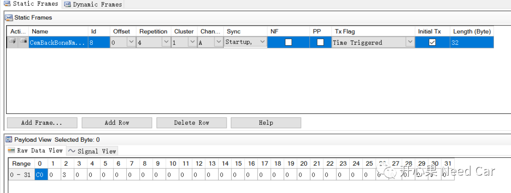
注意：Flexray通信，至少需要两个节点参与，唤醒阶段，需要有节点发送Wakeup Pattern。使用CANoe仿真时，发送Wakeup Pattern的设置在Hardware配置阶段设置，如下所示：
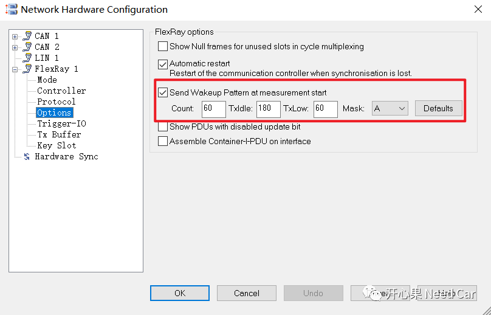
如上图，本例设置60个Wakeup Pattern，每个Wakeup Pattern的TxIdle设置180 gdBit（Nominal bit time），TxLow设置60 gdBit。以10Mbps通信速率计算，Nominal bit time = 1 / 10000000 = 0.1µs。也就是说，本文的Wakeup Pattern = 18µs（TxIdle）+ 6 µs（TxLow）。注意：TxIdle和TxLow按照需求配置。Flexray使用的Transceiver，对wake-up pattern会有要求，一个有效的远程wake-up pattern，包含一个DATA_0 +DATA_1（idle），比如：远程唤醒时，整个唤醒时序需要满足一定的要求，以TJA1081为例，如下所示：但是，阅读手册时（如下图），会发现1 ＜ tdet(wake)DATA_0 ＜ 4。又如何理解Wakeup Pattern = 18µs（TxIdle）+ 6 µs（TxLow）呢？答：tdet(wake)idle表示至少需要的时间，如果tdet(wake)idle = 4，则TxIdle＞4µs。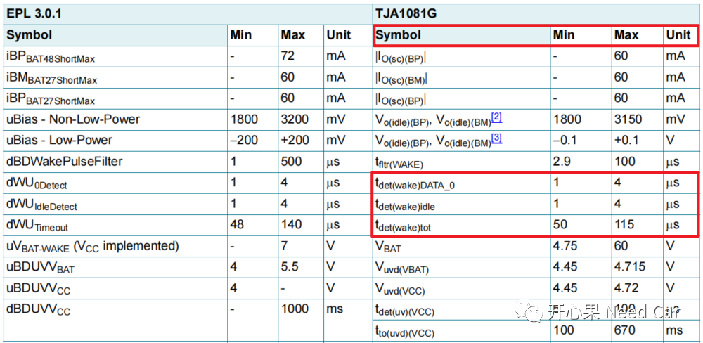
在Analysis->Trace->观测Flexray通信行为，如下所示：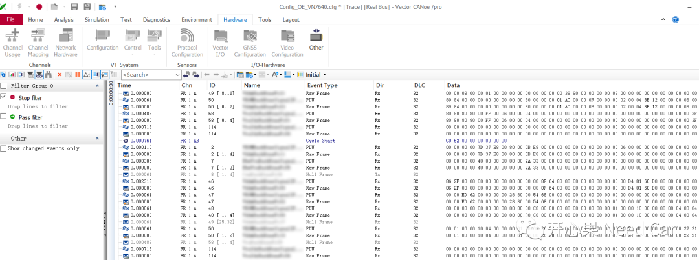
（一）配置Flexray Simulation Setup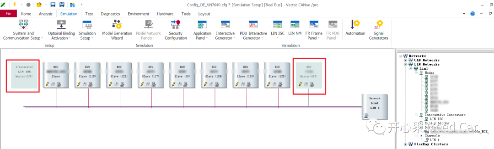
要配置的参数与CAN、Flexray类似，本文选择加载*.ldf文件，让CANoe根据通信矩阵自动配置。上图即是CANoe自动配置的结果。
- 因为Lin是单线通信，连接CANoe等仿真设备时，需要
在Analysis->Trace->观测Lin通信行为，如下所示：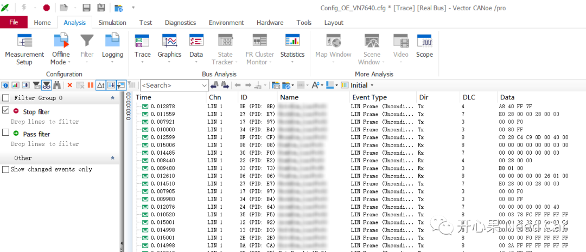
点击下方关注，一起聊聊Autosar/嵌入式，如果需要，联系作者进群，给你更专业的解答